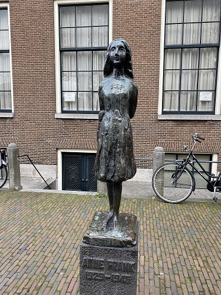
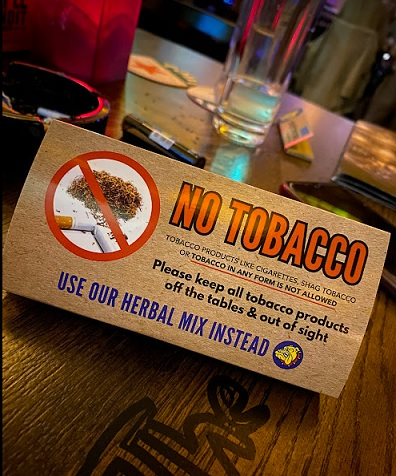

AMSTERDAM
Atracciones y experiencias únicas en Ámsterdam, la ciudad de las bicicletas
Ámsterdam, la capital de los Países Bajos, es una ciudad que combina encanto histórico con una vibrante vida contemporánea. Sus preciosos canales, declarados Patrimonio de la Humanidad por la UNESCO, son el alma de la ciudad y ofrecen una hermosa experiencia para explorar a pie o en bicicleta. Los canales se entrelazan a lo largo de la ciudad, creando un paisaje increíble que te invita a perderte en sus calles adoquinadas.

La ciudad cuenta con una amplia gama de actividades para todos los gustos. Podes visitar el famoso Museo Van Gogh y maravillarte con la colección más grande del mundo de obras del famoso pintor. Los tickets para adultos tienen un valor de €20 por persona, valor que aumentara a partir del 1/01/2024 a €22. Los menores de 18 años ingresan gratis y los estudiantes deberan abonar una entrada de €10. Y no te olvides de pasar por el shop en donde vas a conseguir souvenirs únicos a muy buenos precios, para más información hacé click aquí . Además, podes pasear por el barrio de Jordaan y disfrutar de sus tiendas de diseño, galerías de arte y cafés. Además si sos amante de la música, no podes perderte la gran variedad de conciertos y festivales durante todo el año.
Entre los lugares que no podes perderte se encuentra la Casa de Ana Frank, donde vas a poder conocer la historia de la joven judía alemana conocida por su diario, que escribió mientras se escondía de los nazis durante el Holocausto. Vas a sumergirte en la vida de ella mientras recorres las habitaciones ocultas y lees sus conmovedores escritos. Definitivamente es una visita que no podes dejar de hacer en tu paseo por Amsterdam. Los tickets se dividen en dos categorías: Visita al museo, con tickets de €16 por adulto, €1 de 0-9 años y €7 de 10-17 años. - Visita al museo + programa introductorio de 30 min en inglés con tickets desde €23 para adultos, €8 de 0-9 años y €14 de 10-17 años. Para más información hace click aquí

La gastronomía en Ámsterdam es otro aspecto destacado. No dejes de probar las papas fritas holandesas en los puestos callejeros. Para los amantes del queso, una visita al mercado de Albert Cuyp es imprescindible, vas a poder degustar una amplia variedad de quesos tradicionales y otros productos locales frescos. Además, en el Barrio Rojo vas a encontrar miles de lugares en donde comer, waffles, cookies, y pancakes como los de abajo. Ideal si sos fan de lo dulce.
Los coffee shops son una experiencia única y relajada. Estos lugares te ofrecen la oportunidad de comprar y fumar marihuana legalmente. Eso sí, en algunos lugares no está permitido ingresar con tabaco pero no te preocupes porque vas a poder comprar su propia mezcla en el lugar y disfrutar del ambiente.
Azul